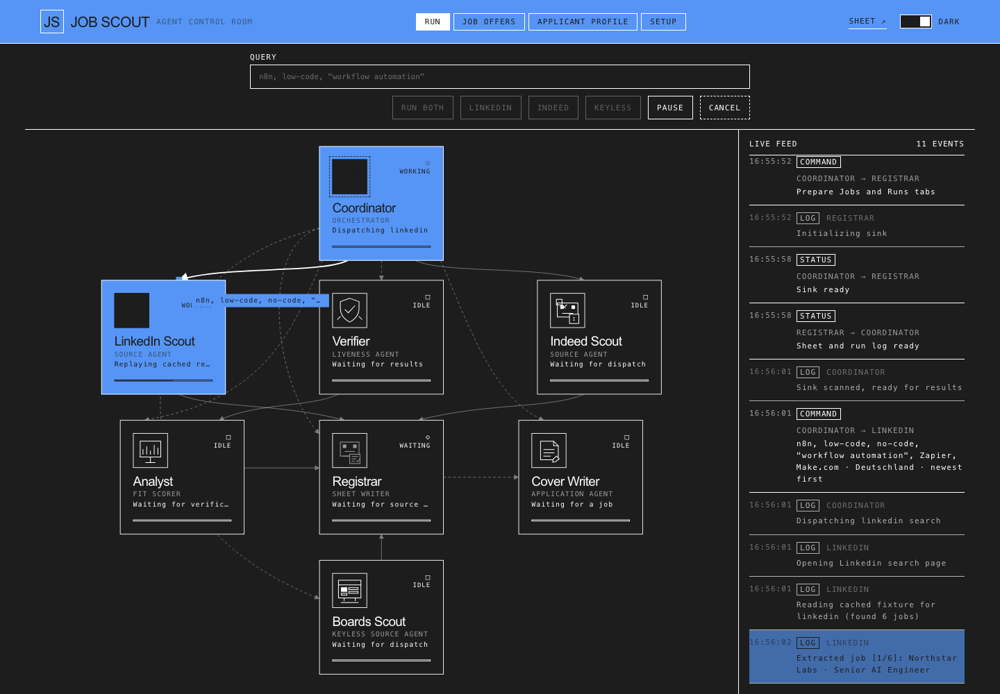

01
Two visible-browser scouts
LinkedIn and Indeed adapters read public search results in a persistent profile, keep volume low, and stop at cooperative pause checkpoints.
JobScout runs a small room of agents that search LinkedIn, Indeed and keyless job APIs, verify every posting, score it against your CV, and write the survivors into a Google Sheet you own. No account. No sign-up. Nothing leaves your machine.
$ docker run -d --name jobscout \ -p 127.0.0.1:8080:8000 \ -v jobscout_data:/app/data \ ghcr.io/aniloncul/matching-jobs-finder:latest # open http://localhost:8080
Docker Desktop or Engine required. The image is multi-arch (amd64 + arm64),
so Apple Silicon and x86 both run it natively. Prefer Compose?
compose.yaml → docker compose up -d.
Windows / PowerShell — same thing on one line:
docker run -d --name jobscout -p 127.0.0.1:8080:8000 -v jobscout_data:/app/data ghcr.io/aniloncul/matching-jobs-finder:latest
Watch commands travel between agents in real time. Pause, resume or cancel a run mid-flight; every state change is on the feed.

Each agent has one job and hands its output to the next. No silent failures: a blocked source says so instead of pretending it was empty.
LinkedIn and Indeed adapters read public search results in a persistent profile, keep volume low, and stop at cooperative pause checkpoints.
Greenhouse, Lever and Ashby boards, Arbeitnow, Hacker News “who is hiring”, the Bundesagentur API and any RSS feed — plain HTTP, no CAPTCHA race.
Dead links, expired postings and cross-source duplicates collapse before they reach your sheet. Provenance is kept per fetcher.
The analyst compares each posting with your master CV, scores the match, and keeps a ranked shortlist instead of a pile.
Paste a sheet link and a service-account JSON once. Rows land in the sheet you shared — or export a plain CSV, no Google account needed.
Any OpenAI-compatible endpoint, local Ollama included. Tailored letters and ATS-checked CVs, rendered to PDF with LaTeX.
There is no JobScout account, no central server and no telemetry. The container talks to the sources and the model you chose, and writes everything else to a Docker volume on your disk.
No terminal required after the first command: the Setup tab takes the key and the sheet.
Docker Desktop on macOS or Windows, Docker Engine on Linux. If docker info works, you are ready.
Paste the command above. It binds to 127.0.0.1 only, so nothing is exposed to your network.
Open localhost:8080, paste a model key, add your sheet, hit Test, then RUN BOTH.
The app is MIT-licensed and runs in Docker on your machine. You pay nothing to JobScout. You do need a model endpoint: a local Ollama is free, and hosted providers have free tiers — bring whichever key you already have.
No. Google Sheets is optional; the registrar can write a plain CSV. If you do use a sheet, you create the service account yourself and share that one sheet with it.
It opens a visible browser with a persistent profile and reads public search result pages, at low volume, with pause and cancel checkpoints. There is no CAPTCHA solving, no proxy rotation and no credential storage. Indeed may ask for a human check; the app pauses and waits for you, then continues.
Yes. Anything OpenAI-compatible works — Ollama, vLLM, LM Studio. Set the base URL and model in SETUP, or point the Compose file at an Ollama container.
Everything is in the jobscout_data Docker volume. Back it up with a one-line docker run --rm -v jobscout_data:/data … tar czf; the README has the exact command.
You can, but then it is no longer loopback-only: set JOBSCOUT_PASSWORD, publish the port, and put HTTPS in front (Caddy or a tunnel). The guides for a VPS and for Oracle Always Free are in the repo.